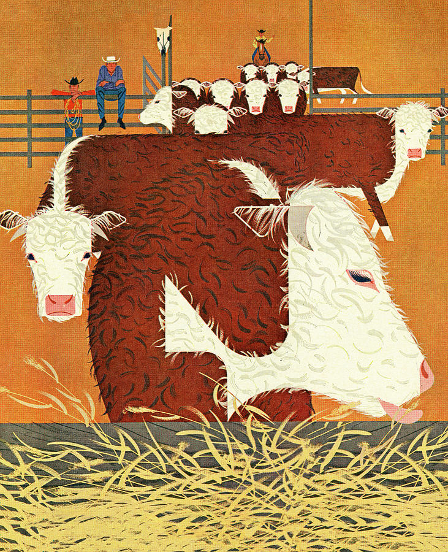

Prose
Ostranenie

Louisiana
July 27, 2002
The man named Bennett spoke as if the world and everything in it were roped together and being dragged in one direction only. He spoke as if this day and those to follow would open out of seams already folded. Sounds of diamond. So it seemed to Dustin. The volunteers on horseback and 4-wheelers would run the cattle down the pastures and into the holding pen. Dustin and Kenny and Kenny’s dad Arthur would use the prods to push them through the alley and into the squeeze chute, where Bennett and strange quiet Dedrick would vaccinate all and brand and castrate those not yet marked and eunuched. Three batches of around thirty or thirty-five each. It would only take a few hours.
This was Dustin’s first time meeting Bennett. Arthur had said that he was the Old Man’s son. That he lived in Atlanta but came back a few times a year to help out. That the cowboys were some of Bennett’s old buddies who still lived here. That he had taken Bennett fishing for the first time when Bennett was a child, and that the Old Man and the Old Man’s wife came to watch their little boy at the pond with the greatest fisherman in the state, and Arthur had caught that day the biggest blue cat anyone had ever seen. That Bennett would take over when the old man passed.
“Neither of you have worked with the alley?” asked Bennett.
“No, sir,” said Kenny, “I just started here in February.”
“Okay.”
“And Dustin is only here for the summer. We really haven’t done much with the cows at all, to be real with you.”
“Okay.”
“Your dad usually has us working with the horses. And lately we been helping out with the hay, baling and moving. And your mom has us do stuff with her gardens.”
“Okay.”
“One night last week, she had me and Dustin out there all night after the armadi- ”
“There’s probably only going to be twenty or twenty-five cows that we will have to brand or castrate or both. The rest are just the vaccinations. But the branding will sound a little nasty. Big hiss on the skin. They’ll jump in the chute. And then you will hear some unhappy hollering from the ones we castrate. But think of them like Alzheimer’s patients. Very short memories. Don’t overthink it, is all I’m saying, because the cows won’t either.”
They would have to wait because the volunteer cowboys had not yet arrived. Perhaps they had not yet awakened. Young morning; dawnlight was still clinging to the pinetops serrating the east sky. Something sensual about the light quiet through the leaves. Like the animal eroticism of blue veins under pale skin. The soft press of a nurse’s cold stethoscope on his chest, last whistle of a deep inhale the only noise in the doctor’s office. They waited.
"Y'all should be starting fall camp soon, huh?” asked Kenny.
"Two weeks." Dustin said.
"Gonna be hell in this heat."
"Probably a few degrees hotter than that."
"You should walk on next year somewhere, man."
"What?"
“Whatever college you're at. Just try out, big dawg. White boy playing cornerback in college, man? Those receivers will not know what's going on. You know I walked on the year I was at Grambling, right?"
"Not sure I'm getting into a college in the first place."
"I don't believe that."
"I've got a 2.4 GPA."
"I don't believe that."
"I didn't ask if you believed it."
"Well, I didn't ask if you asked if I believed it, lil bro."
Rotational grazing meant dividing the fields. On the hill above the alley, opening leftwards as Dustin looked out, the pasture was scrubby and scalded pale, while across the fence and towards the barn area it was lush and enviridesced. Two men rode up on horses from that direction along the dirt driveway. The one that Bennett greeted as Ricky was tall in his saddle, broad-shouldered but with a face so gaunt he looked both forty-five and eighty, and he rode the friendly brown quarter Trafalgar. But the one called Pete was on that rotten colt Timmy, who was already straining his blonde neck against the reins. Defiant. Heart pumping copperhead venom.
“Mister, do not trust the fucking horse,” said Kenny.
Pete grinned wide and bemused and asked “And why not?”
“Me and Dustin broke three of those motherfuckers since May with no problem, but Timmy’s just an asshole, man. He don’t listen to nothing.”
Pete’s smile became a chuckle, and he began to reply, but Bennett interrupted: “I’m going to finish setting up while we wait for Leo.”
Bennett spoke with Arthur. He complained that the last panel of aluminum railing for the alley on the right side, where it was supposed to connect there to the immobilizing squeeze-chute, was hanging loose. Arthur protested that the hook on the chute was bent, and so the panel would not clip in place. Bennett gave a grave nod. He walked over to a nearby fence-gate and robbed it of its securing chain. There was no place to loop the chain in the midpoint of the squeeze-chute, so Bennett stooped and fastened it with its quicklock carabiner around the bases of both chute and panel. He tested it – tauting out with a push, letting it slack, pulling inward into the alley. It held firm at the bottom.
Kenny spoke with Dustin about actresses and music and getting his CDL and hitting the highway for real money. His voice spun bright dizzy for split-seconds, and the edges of it sounded like the delirious vertigo you feel when you are small, and your dad flings you higher in the air than he should, and you are too young to understand. Dedrick spoke with himself over near the chute, perhaps a bit more manic than usual today, Dustin thought.
It was still another hour before the last volunteer cowboy arrived on his 4-wheeler, a bit of a beer gut in the middle and a soiled LSU ballcap on top. His name was Leo but it should not have been, and there was only a weak adhesive holding signifier to signified. Bennett talked to them about the roundup. But the conversation drifted away from him before long. Dustin listened, tried to abstract from the substance and hear only on the rhythms. None of them really “drawled,” even if maybe that’s how some people would have described it, how they say it should sound. The delivery was more syncopated, lilting, island-breezed. Leo was louder than the rest, and he was saying now something like “I don’t care if I look ridiculous. That’s my secret with women.” And Bennett cut in unsolicited and undoubtful, “Ah, but a little restraint goes a long way,” to which Leo replied “Overrated.” And Pete said “Well, I guess there’s more than one way to skin a cat” with cheer and an eyebrow raise at the end, and it struck Dustin that this metaphor must have sounded bizarre when it was first said, before it had enameled over.
“I’m telling you, that nigga is just crazy” said Kenny.
“And you’re antagonizing him anyway?” said Dustin.
Kenny laughed and said “maybe I’m crazy too.”
Dustin nodded like a bobblehead toy, and Kenny laughed again.
“Shit, but my dad says Dedrick really has just been a loony tune since the Old Man first hired him.”
Camp in two weeks, school in three. Math: hopeless. Physics: fun in theory, but math in practice. History: fun in theory, but too much to memorize. Religion: really just more history. English: Summer reading completed; a few short stories and a novel, same sort of stuff, all of it. Sensitive young protagonist. Certainty gets shaped out of the flux of youth. Emotional tension built and then cleanly resolved. Discovery of truths modest but legible. Art: He’d have Ms. Temple to look at, which was nice. And playing with colors was fun. P.E.: pickup basketball and a guaranteed A.
Thunder on the hill, a few dozen cows tattooing loud and fast, the mass of them fluid and swelling into a dull V across the pasture. But the wave broke on the downhill slope seventy-five yards from the alley as both Ricky and Pete pulled off towards the dead pasture’s southeast tree-wall. For a few moments Leo attempted to reconstruct the V before creasing the 4-wheeler back towards the other cowboys’ path and disappearing behind the trees.
Three minutes later, and Leo had emerged and zoomed down to where the rest of them stood by the alley.
“A little one got himself trapped in the fence over there.” he said. “He’s all knotted up.”
Bennett nodded at Kenny, then at Dustin:
“Y’all two go see if y’all can help Leo get him out. Tell Ricky and Pete to just round up as many as they can, the two of them, and bring them into the pen.”
Leo revved his ATV, took off, and they brisked behind on foot.
The small black maverick was wriggling in a tangle of bush and barbed wire but would not or could not step out. It was hard to tell. His neck was caught between two lines of it, such that the lower one was pressed almost to his chest. Bright blood glinted in short rivets along his forehead, ears, neck, jaw. Wiry privet growth snarled through the fence all around him. The calf panted, convulsed, shuddered, was further lacerated, dug himself deeper. Leo told them “Drop the prods; it’s just gonna wind him up more if he gets shocked.” So, Dustin and Kenny released them and pulled upwards on either side of the higher line of wire, careful with their hands, to try to make room for it to pull its neck out.
Leo was muttering, “C’mon you dumb sonofabitch. Just back up. C’mon, bud.” And Dustin thought “Poor cow. Poor Bud. We will free him but he will get his balls clipped off and his hide branded, and he will not understand any of it. Born for the slaughterhouse, no, no, no, no – conceived for it. Can’t understand it. Couldn’t possibly. You poor bastard.” But then Dustin saw the cow’s right eye, and it was a crystal ball spoiling a joke’s punchline, and thought “But maybe this is good. What Bennett said about their memories. You will forget the barbed wire. Your tiny cow brain. Moo. You will forget the sear of the brand. You will forget your scrotum getting cut open. You’ll forget and then you’ll wake up every day afterwards to grazing and crapping and sleeping. Things will make sense for you to the full extent things can make sense for you. Moo.”
Rain had not fallen for three weeks, and the dirt around the alley had dried, in places, into large lily-pad flakes which peeled upwards at the sides, and which crunched under Dustin’s boots like frosted grass in December. The alley itself was no more than fifteen or twenty yards from the holding pen to the chute and was constructed entirely of repurposed drive-through fence gates. You could feel the sun in their railing if you touched them for longer than a second.
Seasick-wobbling on his bad leg, Arthur channeled the cattle one by one from the corral into the alley, forming them into a single file line like schoolchildren. He directed traffic mostly by sweeps of hand. Dustin and Kenny positioned themselves on opposite sides of the alley, stepping up onto the railings at times, poking the cows along with their electric shock-sticks. They'd bunch up at spots, and when one got spooked it would crap, often on the head of the one behind it. Runny, green goo. Revolting. And the stench of it. Not like that of horses. He had spent so much time with horses, not only here for these months but also at home for years before with Jubilee and Miss Trixie and Romulus, and never minded the scent. Horse shit smelled vaguely hopeful. Cow shit smells like the feeling you get 30 seconds after jerking off.
When each cow reached the chute at alley’s end, Dedrick would pull a lever on his side which closed the apparatus around the animal and pinched tight at its neck. Bennett began every one by syringing that area with a repeating vaccinator gun, back-loaded with a vial, and which gave a muted hi-hat ding upon injection. Prick and click. And then for the youngest ones, or even just new ones, he’d remove his brand from a propane tank-heated cylinder, and then there would be the citrus sound of steel cauterizing hide, and sure enough, some shocked contortions jolting the chute. Always last was castration for those still balled, Dedrick slitting open the scrota with precision and relish, and then he would scoop up the testicles that dropped out into a blue bucket. The cowboys lazed around near the holding pen and joked and waited. The cows each stumbled out of the chute dazed and relieved when their turn was through.
Everyone took a short break after the first group of cattle. The cowboys asked Dustin if he played football. He affirmed. Ricky said “Aren’t you a little scrawny,” not as a question, as always someone did. Etc. “Well, if this is gonna be your first year starting, you’ve had a lot of time on the sidelines to study the cheerleaders,” said Leo. Uh huh, yep. And then Leo followed that up with:
“You know what they call the guy fucking the ugliest cheerleader?”
What?
“A guy fucking a cheerleader.”
Second tranche of cattle down the hill, louder than their number, and into the corral and then were siphoned into the alley. Dustin’s black Casio said 11:00 A.M. now. Leo and Bud had each delayed them significantly, and Bennett looked displeased, and Dedrick seemed worked up, fidgety. Dustin could hear the beehive hum of a harvester tractor chopping one of the hayfields. Echoes of dogs barking near the barn. The cows kicked up a dome of dust on their way in, and the heat kilned every living thing inside its dry walls. But despite this the ground of the alley and surrounding area began to moisten squishy-solid with urine and wet shit, the sludge of soaked coffee grounds, and Dustin’s boots started to make a slight suck on some steps.
The salt smell of a fire. Lunch break. Everyone at far end of the holding pen. Brush and pine cindering next to Ricky and Pete. Above, a monomaniacal woodpecker morse-coding something urgent into oak. Fishing a Dr. Pepper out of the ice-water of the cooler on the tailgate of Bennett’s truck. Its cold singe on the back of his throat, crackle-fizz, and its taste like the sound of a drumline before kickoff. Saran-wrapped from the other cooler, a soggy ham-and-cheese-on-white. Gross. Another Dr. Pepper to wash that down. His hair heavy with sweat. Sun directly overhead. Endless ostinato of dawn-noon-dusk.
Ricky and Pete had pulled over Dedrick’s bucket of testicles and were cooking Rocky Mountain Oysters over the fire on sticks, like marshmallows for s’mores, and placing them on a jumbo-sized paper plate. Ricky offered one to Dustin, who stuck his pointer finger into his throat.
“Should have known better than to ask a city kid,” said Ricky.
“City kid? I’m from Bluff Creek.”
“You don’t talk like it though.”
“Yeah, I guess I don’t talk like someone who wants balls in his mouth.”
And everyone in earshot cracked up, even Ricky. Then Dedrick walked by and Ricky started to offer him a roasted testicle as well, but Bennett raised his hand and said “Not today, Ricky.”
Now the third group of cows, though it would not be the last of them because a few holdouts still dotted the pasture.
A commotion arose near the squeeze chute. A pale-orange maverick was churning in the line, only two cattle out from having his balls cut. He was a big boy, too big, almost as large as the increasingly anxious full-grown female ahead of him. Kicking back at a petite sable calf, no more than a couple months old, to his rear. Bucking up halfway on his hind legs, pressing forward and slipping chest and legs up flush on the back of the old girl in front and then slipping down to the mud again.
Anarchy radiated backwards down the alley. Spasms of agitation cresting through the queue. Both Dustin and Kenny stepped down and off the alley railing, which was now rocking and clanging as the bovine-mass shook against its sides, like prisoners rattling cell bars. The lowing grew louder and louder and louder. Even Bennett looked mildly perturbed. Big Boy had worked up a dirty film of sweat as he twisted back and forth in his compressed space. Lateral undulation punctuated with brief vertical ascents, buck and torque.
Bennett and Dedrick caught the next cow in the chute, vaccinated it, unsqueezed it, and shooed it off. Big Boy’s tantrum had now run for maybe two minutes and was not abating. Kick kick kick, climb, fall, kick. Kenny was closest and began prodding him repeatedly near the ribs. Dustin could hear both Arthur and Bennett howling for Kenny to stop. But before Kenny could get the message, the maverick had again semi-mounted the female to his front, then with a twist slipped sideways, so that his front right hoof pushed the top rail of the alley on that side, his weight tipping the panel back at the top even as the chain held at the bottom. Now there was space, enough space that his turning momentum took both hooves up around and over the railing, and he was standing nearly upright and perpendicular to the alley-line. Big Boy eight feet tall and blind furious. But then he lost his brief war with gravity and fell back, slamming ass-first into the heifer. She ran into the squeeze chute, which Dedrick promptly closed. Kenny had stepped away. Big Boy was now completely reversed and trying to salmon upstream through the line, clawing at and onto the sable calf, snorting, crazed.
Dustin scanned around once while he was running over to that end of the alley. No one realized what he was doing, and so no one tried to stop him, so he climbed, swung his leg over the top bar, dropped in. Drawing himself narrow with a big inhale, he ribboned by a spotted Holstein and then to the side of the calf. Stuck the prod into Big Boy’s face. It stepped back, and there was suddenly room between it and the calf. But now what?
Now? There was some “now” but it was too short for Dustin to catch, such that it was now another now, and his chest hurt badly and he was unexpectedly staring at the sky from his back. There was a speck of a jet airplane 10,000 feet directly in front of him. Not above. Ahead. The entire world had rotated merely because he had rotated. What a strange now. A beautiful one. Everything had funneled down into a moment that belonged to itself. Autonomous. Like this instance had been purified of all other instances, all causal interdependences, by an unspeakable pyrolysis.
This will fade, they say, he thought. Whatever sharp moment – what wonder you feel at the oddness, the terror, where it feels like there’s a word on the tip of the universe’s tongue – the edges of it will be sanded down and rounded off. The expanse of life, and the expanding breadth of your days in it, forever dilutes. You’ll be left with a kind of homeopathy, where these moments are absorbed into oceans of innocuity. That’s what people seemed to say, in so many words.
Big Boy stepped on his left shin. Its hoof didn’t land full-weight though, glanced, and so Dustin screamed but was able to gather himself up out of the slush on both legs. There was a mineral flavor in his mouth and the prod was still in his right hand. Reaching more down than forward, he again shoved it in the cow’s face. A buzz, zzzzzzzz, right between the eyes. Big Boy stepped back and then moved forward again, ramming into Dustin’s ribs. Another shock. Back, forward. A silly two-step dance. His shin was shrieking.
Dustin was not sure how long this continued before the tide turned and Big Boy’s spirit was broken. But it turned, and it was broken, and he was able to crabwalk the cow into the chute, left leg dragging slightly behind. When the chute clamped shut, Dustin stepped up onto the railing covered in manure and piss and filth. The sun shined only on him. And then he was back onto Earth to a shower of ‘atta boys, or phrases exchangeable therewith, some of them tinged with unconcealed surprise. Kenny roaring “That’s my fucking dude!” Several backslaps. King of the world. Bullfighter from The Sun Also Rises. What would dark-haired Lorrie Martinez say if she could see him now, gilded with mud and sweat, triumphant, neon in muck? Nothing. She would say nothing; he'd never spoken to her and she didn't know who he was. Good Lord.
Bennett and Pete sat him down. He pulled up his jean leg and there was a smile-shaped indentation in his shin and a broad red scrape around it. The whole area would bruise up nice. Bennett fetched a water from the cooler and then a mini first-aid kit from his truck, and then poured the water and peroxide from a brown bottle on the raw patch. Tiny bubbles frothed and popped, and it burned like the end of the 400-meter dash for a few seconds. He said he didn’t want to go home, and Bennett nodded.
Off the cowboys went for the last cattle, and Dustin watched them go. A few minutes of down time now. He inspected his prod and pulled its trigger. Watched the leap of electricity between the prongs at its tip and felt the inexplicable urge to test it on himself, just feel that sour current for a blink against his forearm or something, the same impulse you get when you walk by the fire alarm pull at the movie theater. But then that oddness diverted halfway through to another, something that sounded like a cat imitating a birdcall. Kenny.
And as Dustin turned his head to look, it seemed as if he felt an Antarctic blast in his gut before the events sparking before him even ossified into sense: Dedrick clumsily accelerating in his big old boots. Dedrick dropping the castration knife. Kenny gripping his side and continuing the bird-cat scream. Dedrick heading towards the woods lining the long driveway. Arthur tottering towards Kenny. Himself limping in that direction too on his own bum-leg, an inverted shadow of Arthur. Bennett yawn-mouth dumbfounded, and the hot air’s waves hazing him into an impressionist painting. Pete and Ricky turning their heads and looking from atop the hill, and then, delayed, their horses turning too. Leo too distant from them and too close to his ATV motor to hear.
Tomato paste was coating Kenny’s white t-shirt from the inside. He began splicing curses into the screams and then sentence fragments: “Ahhh fuck he fucking stabbed fuck ahhhh.” Angry angry. Bennett and Arthur reached him first and off came the shirt. They wadded it and stuffed it against the wound. It was visible to Dustin in flashes with Bennett’s adjustments of the shirt. Less a stab and more a slash, crescenting from Kenny’s obliques towards his stomach. Maybe not too deep, from what Dustin could see. Kenny went to one knee and then leaned from it onto the hip and elbow of his uninjured side. Arthur stood and scanned and yelled. But Dedrick was out of sight.
It was not long before the bloodflow decelerated to a dribble. Kenny continued cursing but the alarm in his voice had dissipated. Pete and Ricky had galloped back now, and Pete had tied Timmy to the holding pen and jerked a cellphone from his jean pocket and ambled about to try to get a signal. Arthur was looking around and still now half-shouting: “That damned lunatic. That god damned lunatic,” forcing Pete to full-shout when he finally dialed through to 911. Bennett ran his big hands through his hair, tried to bark over Pete at the dispatcher, who surely didn’t hear him. Where the hell had Dedrick gone? Static in Dustin’s head, something between vision and noise. Where the hell had Dedrick gone? Kenny spoke to him, spoke to his dad, spoke to him. Grimacing: “Don’t you dare make me laugh right now, dawg.”
The police arrived before the ambulance, took statements, and then several of them fanned into the woods as the paramedics helped Kenny into the vehicle’s back. He said he didn’t really need to go to a hospital; they said he probably should anyway, probably they’d need to put in a few stiches. Wrapped his torso with gauze the lace texture of a dream. Arthur kept shaking his head like he had water in his ear. Before the ambulance closed up and left, Dustin poked his head in and asked Kenny: “Monday – same time, same place?” and Kenny winced under an unwelcome giggle and said “Man, fuck this place.” Arthur told him he would come pick him up in a little bit.
Time passed. An hour, maybe more. He hadn’t looked at the Casio in a while. Someone radioed the police officer still standing with them and said Dedrick had been picked up walking along the highway by a patrol car. The other cops returned. Then they all left together, said they’d be in touch. Dustin noticed that he once again could notice the pain in his leg. Tincture of hurt latticing gradually from the wound’s center.
The sun had worked its way behind the pines reefing the pasture to the west, towards the highway, staining the sky garnet. Bennett spoke: “Fellas, I hate to say it, but we’ve got about 10 more cows to get through here. I’d prefer not to ask y’all to come back on a Sunday.”
Arthur nodded, picked up his prod and leaned on it. Ricky, Leo, and Pete rode off towards the scattered remaining cattle. Bennett moved the branding setup then his white table with all his supplies around to the chute’s lever side, and he placed on it a folding knife from his pocket. Dustin stared at the horizon where a group of buzzards was so far off it had metamorphosized into a swarm of antic gnats. Then he sat, and then reclined all the way back, then he placed his head to the ground, and he listened.
The fourth and final group. The stragglers. Bud was the third-to-last through, with pinkening lines in his face, and he jostled in the chute a bit and then awkwarded out of it just like the rest and then trotted off into the field following a few confused beats. Two more cows and then they were done. Bennett gathered up the used vaccination needles, the brand and its pit and its propane tank, the gloves and ice chests and first-aid kit, placed them all in the bed of his F-250. Pete said “Son, we are all going down to the house. Come grab a couple of beers. We won’t tell your parents.” Dustin said thank you but no thank you, that he should probably get home. He heard Ricky say something like “what did I tell you?” to one of the others.
At the Sonic two songs away from the farm, he ordered a double hamburger, fries, and a chocolate milkshake. The server who clipped the tray with food to his car was a pretty tan brunette whose name tag read “Dan.” That could be “Danielle” or “Dana” or “Daniella” or any number of things, he guessed. Indistinct rumbling wondrous strange, like God clearing His throat somewhere. The wind picked up. There was no rain yet but a membrane of clouds was stretching low and westward towards the sun’s last sizzle. He felt a tear on his right cheek but no sadness with it. This goddamn $2.00 burger was the best goddamn thing he'd ever eaten. "Thank you, Bud" he told the burger - but then - "no, this is not Bud. Bud was not a symbol. Is not a symbol.” He sat for a long time.
He pulled out and turned onto Wood Road, and started down the 13 miles towards his house, and drove under the moonless night, and drove under constellations veiled, and he drives now past the last streetlights, and he is driving into a tomorrow run loose from today, and he is driving towards a horizon ensanguined and unfixed, and he is driving into the blackness effulgent.
Drew Martin is an attorney and author in Louisiana.